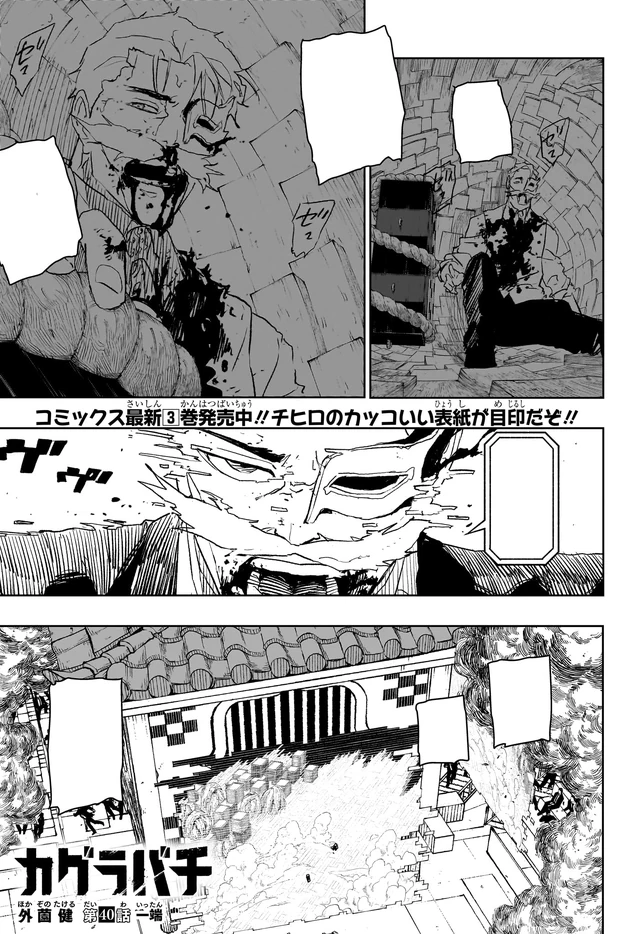

Overview
Kyora is the Rakuzaichi in a person: polite, absolute, certain that the auction is civilization. Hakuri is a failed product until the boy becomes a rival Storehouse. Tenri dies on Datenseki trying to be useful. When Chihiro corners him in the collapsing subspace, Kyora unsheathes Magatsumi and almost becomes someone else. He dies as himself, which is the only kindness the book gives him, and he uses it to admit, too late, what he did to Hakuri.
Personality
Polite, absolute, certain that the auction is civilization. Two hundred years of Rakuzaichi sit in his manners. He will spend children to keep the market open. Hakuri is empty stock. Tenri is a son who can still be useful if the stone holds. Soya, Tamaki, Enji are the Tou, household military, not a family dinner. The eleventh head does not raise people. He inventories them.
The politeness is not a mask he drops. It is the product. He auctions Shinuchi the way the firm auctioned everything else. When the Storehouse becomes a rival in his discarded son, he does not become sloppy. He becomes willing to touch Magatsumi. That is the only time the book lets the market lose. He almost becomes the Sword Master. He dies as Kyora Sazanami, which is worse and better: worse because the admission is late, better because the auctioneer does not get to finish as someone else’s mouth.
He is not Hishaku. He is older than the Hishaku. Yura listed a blade at his house. Sojo never sat at this table. The Sazanami are a two-century firm; the ten are a four-year gang. Kyora treats both as clients. The firm ends anyway, because one child remembered a woman the auction killed and inherited the building.
Abilities
The Storehouse, Kura, is the family head’s subspace. Loot and human beings. Kyora’s version includes environmental control inside the Kura. He is the eleventh person to hold that room as a title. Hakuri is the second person in clan history to hold both Isou and the Storehouse, and the first to walk the room out of the building. Until that happens, Kyora is the architecture.
He is not a blade bearer by contract. He unsheathes Magatsumi while dying. Anyone who holds the sheathed masterpiece starts becoming Akemura. The Sword Master looks through the auctioneer’s eyes. Chihiro and Hiyuki keep the building from becoming a second island. Kyora resists the possession long enough to die as himself. That resistance is the last technique on his page, and it is not sorcery. It is manners holding a line the market already crossed.
The Tou are his other kit: Soya, Tamaki, Enji, Tenri as household military. Tenri dies on a half-stable Datenseki stone trying to impress him, Sojo’s leftover experiment, Hishaku infantry-grade ore, long enough to kill a son. Isou is the clan’s burial-force. Kyora did not need it to answer in Hakuri. He needed Hakuri to stay empty. The boy did not.
Story role
The Rakuzaichi arc is his book. Shinuchi is listed at the 208th auction. Volume 3’s jacket is Chihiro, Hiyuki, Kyora. Volume 5, Fervent, crowds him on with Chihiro, Hakuri, and Hiyuki. Chapter 40’s color page is Magatsumi on the auction floor. Chihiro lets the clan take Enten so the blade can scout the Storehouse on its own charge, then walks in on Cloud Gouger’s last charges and a rebuilt arm.
Hakuri remembers the woman the auction killed. The Storehouse opens in the discarded son. Tenri dies on Datenseki. Inside the Kura, Chihiro spends the last of Kuregumo to take Enten back. Kyora, cornered in the collapsing subspace, touches Magatsumi. The Master looks through. Hiyuki and Chihiro empty the building. Prisoners leave. The Rakuzaichi ends. Kyora dies resisting the possession, and he uses the last of himself to admit what he did to Hakuri.
He is not in Vs. Sojo except as the market that will later list a stolen masterpiece. He is not in the Sword Bearer arc except as a finished firm. The Hishaku still need blades moved. Hakuri is the building that walks. Kyora is the building that fell.
Relationships
Hakuri is the son he threw away and the rival Storehouse he dies admitting. Soya, Tamaki, Enji, and Tenri are the other children, the Tou. Tenri dies trying to be useful. Soya gets a volume extra about memories he would like to misplace. The clan’s emotional illiteracy is the house style. Kyora is the eleventh head of that style.
Chihiro is the swordsman who corners him in the Kura. Hiyuki is the Kamunabi flame who will burn the market rather than leave people on the shelves. Yura is the client who listed Shinuchi. Akemura is the thing that looks through Kyora’s eyes when the sheathed blade is touched. The auctioneer almost becomes the Master. He dies as the father instead, which is the only kindness the book gives him.
Notes
Kyora Sazanami. Eleventh head. Storehouse, environmental control inside the Kura. Children: Soya, Tamaki, Enji, Hakuri, Tenri. Fate: dies resisting Magatsumi’s possession after spending Shinuchi. Volume 3 and Volume 5 jackets. Chapter 40 color page.
Two centuries of Rakuzaichi end in his arc, chapters 19–46, Volumes 3–5. Official chapters: VIZ / MANGA Plus. Soya’s memory extra lives in the tankōbon. The Tou defense panel sits on the Rakuzaichi page.
The household
Two centuries, not a one-arc villain. The Tou are Soya, Tenri, Tamaki, Enji. Hakuri is the error. Magatsumi in a dying auctioneer’s hand is a proxy, not a contract; Akemura looks through and still does not get a new bearer. The Sazanami sold a listing Yura cracked. They did not join the ten. Full firm: Sazanami. Technique of the house: Isou and Storehouse, dual in Hakuri, historically almost unique. Tenri’s Datenseki death is Part 2’s kiln taught in the wrong shop.